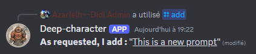

Mes Projets
Deep-Character
Projet perso, ce bot discord est né de la volonté d'aider les rolistes à connaître et dévelloper leur personnage tout en enrichissant leur connaissance de l'univers dans lequel ils jouent.
Ajouter un nouveau prompt
Grâce à cette fonctionnalité, chaque serveur pourra ajouter des prompts propre à leur univers.
Modifier un prompt éxistant
Il était nécessaire d'ajouter une telle fonction afin de corriger de potentielles fautes qu'elle soit linguistique ou loristique.

Afficher une liste
La fonction liste affiche les 10 premiers promts dans un embed message accompagné de bouton 'précédent' et 'suivant' permettant de naviguer dans la liste par bloc de 10.

TUMO LAB
While exercing as a coach in Tumo, my interest for programming skills improved deeply. I invest some of my work time to do programming workshop on my own.
Lab 1
contenu à venir
Lab 2
contenu à venir
Lab 3
contenu à venir
Tableur de suivi
Ce projet est dans une dynamique de dévellopement continu dans le cadre de mes fonctions de Coach de création numérique à Tumo.
Problème de départ
- Informations nécessaire dispersées
- Complétions de liste manuelle
- Informations dispersées
- Pas d'historique accessible, donc de visuel sur les changements de parcours/créneaux
- Erreurs humaines
Objectifs
- Gagner du temps
- Faciliter la lecture des données
- Rendre l'outil accessible à tous
Solutions mises en place
- Refonte et factorisation du tableur via des formules avancées (INDEX, MATCH, QUERY…) pour limiter les doublons et réduire les erreurs humaines
- Création d’une interface claire, structurée et réutilisable par des utilisateurs non techniques
- Développement de scripts automatisés : réinitialisation mensuelle de cases à cocher, envoi conditionnel d’emails, conversion de liens en affichage d’images
Solutions en cours de dévellopement ou en vue d'être dévellopées
- (üõ†Ô∏è En cours) ... Permettre un suivi au mois pour mieux rep√©rer les changements dans le parcours des jeunes
- (üõ†Ô∏è En cours) ... Script de mises √† jour du tableur afin de permettre aux usager une mise √† jour facile vers la derni√®re version.
- (üîú Plannifi√©) ... Automatis√© l'import des donn√©es n√©cessaire
Impact
- Un import simple de 4 tableaux depuis looker studio permet aux formules de rassembler toutes les infos nécessaire au même endroit.
- Domaines choisis et statuts des pré-requis associés
- slow learner or high learner (représenter par un ratio)
- Si inscrit à un lab, affiche la date, même si c'est dans 6 mois.
- ect...
- Photo des jeunes dans le tableur à coté des informations de suivi avec respect du rgpd (elle ne sont pas stockés sur le tableur)
- Outil utilisable sans connaissance approfondie du logiciel
-
Envoi semi-automatique d'un mail pour se présenter en tant que coach au parents.
Optimus Chat
Projet expérimental pour comprendre les fondamentaux d’une architecture client-serveur avec WebSocket.
Intention de départ
- Apprendre à structurer un projet en frontend / backend
- Découvrir le fonctionnement des WebSockets pour la communication en temps réel
- Expérimenter la rapidité de Bun.js en tant que runtime backend
Objectifs techniques
- Mettre en place une communication temps réel stable
- Gérer dynamiquement les channels et les utilisateurs
- Clarifier les rôles entre frontend (affichage) et backend (logique)
Fonctionnalités déjà en place
- Envoi des messages avec horodatage et identifiant utilisateur
- Création et gestion des channels (rejoindre / quitter)
- Liste des utilisateurs transmise à chaque changement
Prochaines étapes
- (üõ†Ô∏è En cours) ... Gestion d'envoi d'image en pi√®ce jointe
- (üîú Plannifi√©) ... Authentification et gestion de sessions
- (üîú Plannifi√©) ... Ajout d‚Äôune interface d‚Äôadministration des channels
Apprentissages clés
- Compréhension des flux de données entre client et serveur
- Utilisation concrète des WebSockets
- Travail en binôme avec répartition claire des responsabilités
Cursus 42
Ma réussite à la piscine de l’école 42 (un bootcamp réputé pour sa rigueur) m’a permis de rejoindre un cursus exigeant, fondé sur l’apprentissage par la pratique et la collaboration.
Libft
- Reproduire le code des fonctions de la librairei standard.
- Comprendre la manipulation des chaînes de caractères et pointeurs.
- Maîtriser les bases de la compilation modulaire avec un Makefile.
// Pour en voir plus, vous pouvez cliquer ici // Voici un exemple de quelques fonctions réalisé // dans ce projet. // Example : // ft_isalpha int ft_isalpha(int c) { return ((c >= 'A' && c <= 'Z') || (c >= 'a' && c <= 'z')); } // ft_isascii int ft_isascii(int c) { return (c >= 0 && c <= 127); } // ft_atoi : Retourne la chaine de caractère donnée convertie en nombre int ft_atoi(const char *str) { long long result; int sign; int i; result = 0; sign = 1; i = 0; while ((str[i] >= 9 && str[i] <= 13) || str[i] == 32) i++; if (str[i] == '-' || str[i] == '+') if (str[i++] == '-') sign = -1; while (ft_isdigit(str[i])) { if (sign > 0 && result > (LLONG_MAX - (str[i] - '0')) / 10) return (-1); else if (sign < 0 && result > (LLONG_MAX - (str[i] - '0')) / 10) return (0); result = result * 10 + (str[i++] - '0'); } return ((int)(result * sign)); } // ft putnbr : Convertir un nombre en chaine de caractère puis l'imprimer size_t ft_putnbr_fd(int nb, int fd) { unsigned int unb; size_t len; len = 0; if (nb < 0) { ft_putchar_fd('-', fd); unb = -nb; len++; } else unb = nb; if (unb >= 10) len += ft_putnbr_fd(unb / 10, fd); len += ft_putchar_fd((unb % 10) + '0', fd); return (len); }
Ft_printf
- Apprendre à gérer les fonctions variadiques (dont le nombre d'argument peut varier à chaque appel).
- Manipuler des arguments de manière dynamique avec
va_list. - Renforcer la rigueur du parsing et de l'affichage formaté.
// Pour en voir plus cliquer ici
// Ce projet à nécessité la création sur mesure de plusieurs fonctions de convertion
// Vous verrez ici quelques exemple
// int select_flag_n_print(char flag, va_list args)
{
int len;
unsigned long tmp_ptr;
len = 0;
if (flag == '%')
len = ft_putchar_fd('%', 1);
if (flag == 'c')
len = ft_putchar_fd(va_arg(args, int), 1);
if (flag == 's')
len = ft_putstr_fd(va_arg(args, char *), 1);
if (flag == 'p')
{
tmp_ptr = va_arg(args, unsigned long);
if ((void *)tmp_ptr == NULL)
return (write(1, "(nil)", 5));
len = write(1, "0x", 2);
len += ft_puthex(tmp_ptr, flag);
}
if (flag == 'd' || flag == 'i')
len = ft_putnbr_fd(va_arg(args, int), 1);
if (flag == 'u')
len = ft_putnbr_deci(va_arg(args, unsigned int));
else if (flag == 'x' || flag == 'X')
len = ft_puthex(va_arg(args, unsigned int), flag);
return (len);
}
Get_next_line
Objectifs
Créer une fonction capable de lire un fichier et de se souvenir où elle est dans le fichier tant que le file dirrector n'a pas été fermé
- Approfondir la gestion fine de la mémoire (allocations, libérations), la manipulation de buffer et la lecture incrémentale.
- Découvrir les outils de diagnostic comme
perror.
// Pour en voir plus Cliquez ici
// Quelques fonctions qui compose le projet
// get_next_line : est l'entrée du programme. C'est elle qui valide les arguments de départ avant de distribuer le travail aux autres fonctions.
char *get_next_line(int fd)
{
static char *stack;
char *buffer;
char *line;
if (fd < 0 || BUFFER_SIZE <= 0)
return (NULL);
buffer = (char *)ft_cal_z(BUFFER_SIZE + 1, sizeof(char));
if (!buffer)
return (NULL);
stack = read_line(fd, stack, buffer);
free(buffer);
if (!stack)
return (NULL);
line = extract_line(&stack);
return (line);
}
Pipex
- Comprendre le fonctionnement des pipes Unix et la redirection des file descriptors.
- Apprendre à chaîner plusieurs processus pour reproduire un comportement de type shell
(ex :ls | grep .c).
// Pour en voir plus Cliquez ici
// Quelques fonctions qui compose le projet
int main(int argc, char **argv, char **envp)
{
int i;
t_pipex pipex;
int status;
pid_t pid;
pid_t last_pid;
int exitcode;
if (argc < 5)
print_error("Usage: ./pipex file1 cmd1 cmd2 file2\n", 1);
i = 2;
pipex.infile_name = argv[1];
pipex.flags = O_WRONLY | O_CREAT | O_TRUNC;
check_here_doc(argc, argv, &pipex, &i);
int fd_in = open_files(&pipex, argc, argv);
while (i < argc - 2)
{
create_child(argv[i], envp, fd_in);
i++;
}
last_pid = last_command(argc, argv, envp, pipex);
pid = 0;
exitcode = 1;
while (pid != -1)
{
pid = wait(&status);
if (pid == last_pid && WIFEXITED(status))
exitcode = WEXITSTATUS(status);
if (pid == last_pid && WIFSIGNALED(status))
exitcode = 128 + WTERMSIG(status);
}
return (exitcode);
}